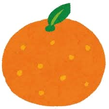

みかんの収穫量＆産地
ー割合もあるよ
-
全国:74.9万t
- 和歌山県 14.78万t 有田ミカン
- 愛媛県 12.78万t まどんな，甘平
- 静岡県 9.97万t 三ケ日みかん
- 熊本県 9万t 不知火
- 長崎県 5.2万t せとか
- 佐賀県 4.69万t 太良みかん
- 愛知県 2.41万t 蒲群みかん
- 広島県 2.2万t 石地みかん
- 福岡県 2.09万t 清見
- 三重県 1.85万t 南紀みかん
順位 都道府県 収穫量 地域で有名な品種
みかんの糖度
- あすき
- あすみ
- 姫小春
- べにばえ
- 大将季
- カラマンダリン
- 紅まどんな
- はやか
- はるか
- ポンカン
都市別みかんの価格
- 長崎市
- 高松市
- 和歌山市
 安い都市ランキング
- 宇都宮市
- 札幌市
- 富山市